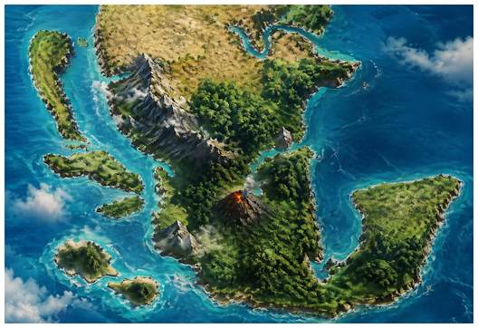
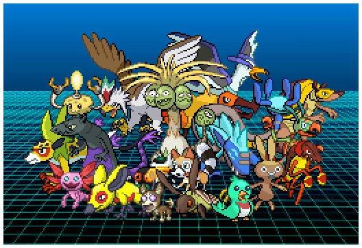
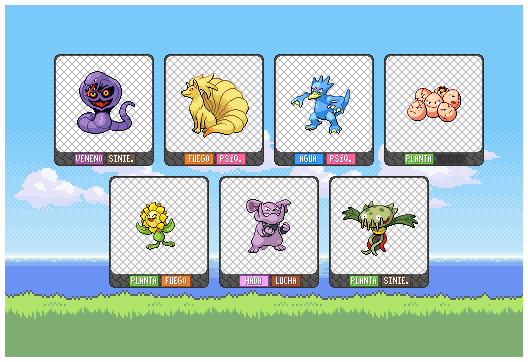
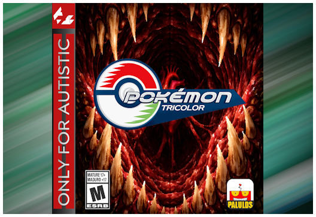

Bienvenido a Nejico
Nejico es la región en la que se desarrolla la historia de Pokémon Tricolor. Esta región, inspirada en la geografía y cultura de México, presenta un entorno único donde conviven tradiciones ancestrales con modernidad. Los jugadores recorrerán diversos biomas que van desde selvas tropicales y cenotes, hasta desiertos áridos y montañas nevadas, cada uno albergando Pokémon exclusivos de la región y una comunidad de entrenadores con sus propias historias. La narrativa del juego gira en torno a tres facciones rivales que representan diferentes filosofías sobre la relación entre humanos y Pokémon, conflicto que se entrelaza con los misterios ocultos de Nejico y su pasado legendario.

Más de 100 Pokémon nuevos fueron diseñados específicamente para Nejico, cada uno con su propia identidad visual y mecánica. Algunos responden a la temática regional con coherencia, mientras que otros nacieron simplemente porque el creador pensó que se veían chidos, sin importar mucho el contexto.

Descubre nuevos movimientos y habilidades junto con nerfeos y ajustes tanto innecesarios como necesarios que alteran la previsibilidad del juego. Cada cambio, aunque parezca arbitrario, fue pensado para romper los patrones conocidos y evitar que la estrategia se sienta mecánica o calculada. El objetivo fue crear un entorno donde la experiencia de juego cambia cada vez que la replanteas, manteniendo la rejugabilidad alta sin caer en la monotonía de un metagame completamente predecible.

Nuevas mega evoluciones y algunas formas gigamax reinterpretadas como megaevoluciones por puro capricho del creador. No siempre respondió a un balance perfecto o a una lógica de diseño coherente, sino a la simple idea de "esto se vería épico". El resultado es un sistema de transformaciones que, aunque a veces lógicamente cuestionable, mantiene la sorpresa y la aberracion creativa que define al proyecto.
Nuevos personajes que entran de lleno en la categoría de "autismo en potencia", figuras XD sin filtro que van desde crossovers inesperados de otras sagas hasta originales cuyas narrativas rozan lo absurdo porque el creador decidió que debían existir así, con historias que desafían la lógica de pokémon. El resultado es un bodrio, donde nada es tomado demasiado en serio.
Nuevas historias con exceso de esencia y autismo puro te esperan en Nejico. Narrativas bizarras y edgy que no temen ser rancias, absurdas o completamente fuera de lugar. Si buscas una trama coherente, esto no es para ti. Si buscas un cagadero y una experiencia que se burla de sí misma mientras avanza, bienvenido.
